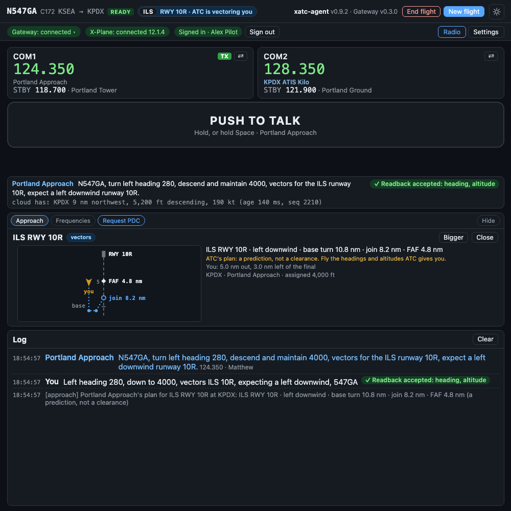

AI air traffic control · X-Plane 12
Talk to ATC. It talks back.¶
Hold push-to-talk and speak as you would on a real radio. A controller answers in US FAA phraseology, on the frequency you are tuned to, from the gate at one airport to the gate at the next.
YouSeattle Clearance, November 547 Golf Alpha, IFR to Portland with Charlie.
ClearanceN547GA, cleared to Portland via the SUMMA2 departure, then as filed. Maintain 5000, expect 16000 10 minutes after departure. Departure frequency 119.2, squawk 4521.
YouCleared to Portland, SUMMA2 then as filed, 5000 expect 16000, 119.2, squawk 4521, 547GA. ✓ Readback accepted

- 128.000Clearance
- 121.700Ground
- 119.900Tower
- 119.200Departure
- 124.200Center
- 124.350Approach
- 118.700Tower
- 121.900Ground
What it does¶
-
Every position talks to you
Clearance Delivery, Ground, Tower, Departure, Center and Approach, each on its real frequency. Tune a frequency nobody is on and you hear nothing.
-
Real procedures
IFR clearances, taxi routes with hold shorts, SIDs and STARs, climbs and descents, vectors to an ILS, RNAV or visual approach, and handoffs in between.
-
Readbacks are checked
A correct readback gets silence and a check mark. A wrong one is corrected: "negative, squawk six six six two".
-
ATC calls you first
Handoffs, a readback you forgot, an altitude you drifted from, traffic, a go-around: the controller speaks when a real one would.
-
ATC's plan, drawn
When Approach vectors you, the window draws the whole plan: the downwind, the base turn, where you join the final, and you.
-
Any US airport
Procedures, frequencies and airspace from the FAA's own data. Taxiways and parking from your own X-Plane scenery.
What a flight is like¶
- Start X-Plane 12 and the xatc-agent window. Press New flight and enter your flight plan, or load it from SimBrief.
- Tune the ATIS and listen. Then call Clearance Delivery, get your clearance and read it back.
- Ground taxis you to the runway. Tower clears you for takeoff. Departure climbs you and puts you on course. Center takes you to cruise and brings you down again.
- Approach vectors you to final and clears the approach. Tower clears you to land and tells you where to leave the runway. Ground taxis you to the parking you ask for.
Your first flight walks through it step by step.
What you need¶
-
X-Plane 12 on Windows
Windows 10 or 11, a microphone, and an internet connection during the flight. The controller runs in the cloud; the window beside X-Plane is a thin client.
-
An invitation
xatc-agent is an invitation-only experiment. The owner creates your account and gives you the client.
Know before you fly¶
A simulation, and an experiment
xatc-agent is for flight simulation only. It is not a training device and must never be used for real-world flying. It is under active development: what a controller says and does changes between releases, and things break.
- IFR only, for now. VFR departures, pattern work and flight following are not built.
- US airports work best: everything outside the taxiways comes from the FAA's data. Outside the US, ATC asks your X-Plane for the airport's procedures and frequencies instead.
- English, FAA phraseology.
- When ATC is asked for something it has not been taught, it says so: "unable, I have not completed that training." It does not make something up.